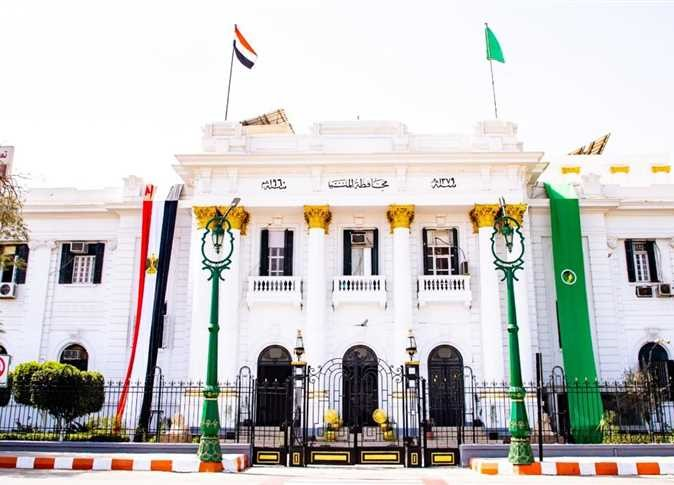

عيد المنيا القومى
هي إحدى محافظات مصر، تقع بين محافظتي بني سويف شمالًا وأسيوط جنوبًا. عاصمتها مدينة المنيا. هي واحدة من أهم محافظات صعيد مصر وذلك بسبب موقعها المتوسط وما تضمه من مواقع أثرية فريدة. بها جامعة كبيرة تضم خمسة عشرة كلية. لُقِّبت سابقاً باسم منيا الفولي نسبة إلى الشيخ أحمد الفولي.
في العصر الفرعوني كان الإله (تحوت ) هو معبودها موصوفاً بأنه إله الحكمة والمعرفة. وفي العصر القبطي شُيّدت كنيسة السيدة العذراء متزامنة في الوقت الذي شيدت فيه كنيسة القيامة في القدس. وفي أواخر القرن السابع الميلادي وصل إليها الفتح الإسلامي في عهد الخليفة عمر بن الخطاب فأزال حكم الرومان الشرقيين عنها، وانتشر الإسلام فيها بسرعة فصارت الأغلبية العظمى من أهلها تعتنق الإسلام وشُيّدت الكثير من المساجد في أرجائها واستمر ذلك في زيادة في عهد الخليفة عثمان بن عفان والخليفة علي بن أبي طالب وعهود الحكم التي تلت ذلك إلى العصر الحديث.
أصل الاسم
تطور اسم المنيا من الكلمة الهيروغليفية (مِنعه) وهو مختصر من الاسم الكامل القديم (مِنعه خوفو) الذي ورد في نقوش مقابر بني حسن وهو اسم مرضعة الملك خوفو، ثم تطور هذا الاسم إلى (مِنه ) في القبطية وتعني المنزل، ومنه جاء الاسم الحالي (المنيا)، وكان في العصر الإسلامي حكمها الوالي ابن خصيب فنسبت ‘ليه منية ابن خصيب التي تمنى ولايتها الخصيب بن عبد العزيز، ابن الخليفة العباس وتحققت أمنيته بولايته عليها، وكنية منيا الفولي تقال نسبة إلى العالم الإسلامي الشهير أحمد الفولي تيمنا بإقامته بها.
عيد المنيا القومى
تحتفل محافظة المنيا بعيدها القومي يوم 18مارس من كل عام ويأتي ذلك تخليداً لذكرى ثورة أبناء المنيا ضد الإنجليز لإعتقالهم سعد زغلول وزميله علي شعراوى (ابن المنيا) وعبد العزيز فهمي يوم 8 مارس 1919 حيث أثار ذلك نفوس المصريين وخرجوا فى ثورة عارمة. وفى المنيا وبدأت المظاهرات في المنيا في 10 مارس ولكي يشل الشعب تحركات المستعمر قام بقطع السكك الحديدية فانقطعت الصلة بالقاهرة وسارع أبناء المنيا بتكوين لجنة من خمسة وعشرين مواطناً تولت قيادة المظاهرات بالمدينة ضد الغاصبين. وفي يوم 18 مارس قام المواطنين فى مركزي دير مواس وملوي بالمنيا بحرق قطار قادم من الجنوب يحمل مفتش السجون الإنجليزي "بوب" فحرقوا القطار بمن فيه وأصبح هذا اليوم عيدا قومياًللمنيا.
